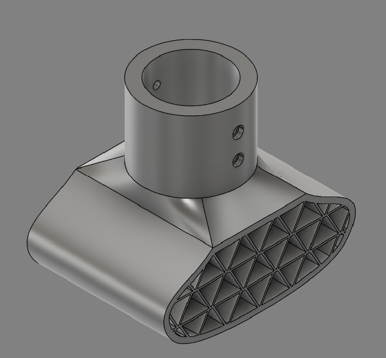
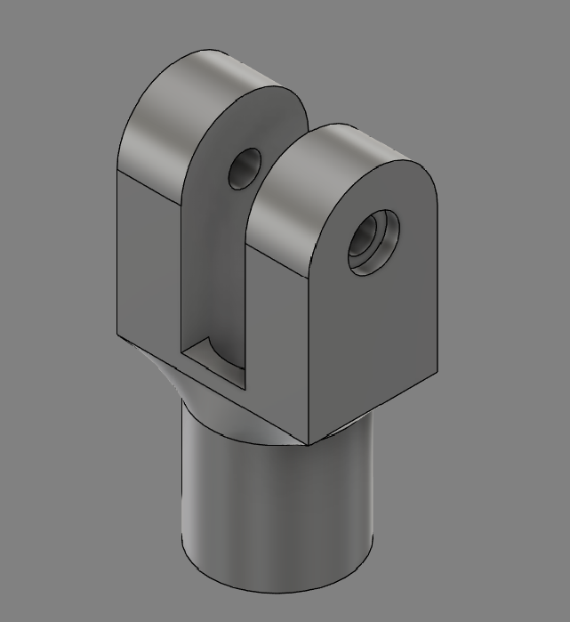
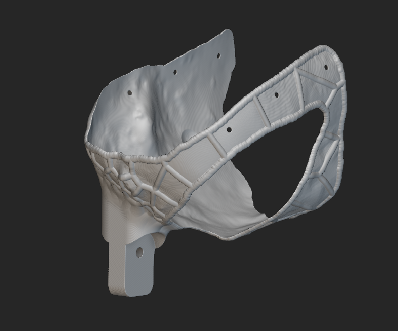
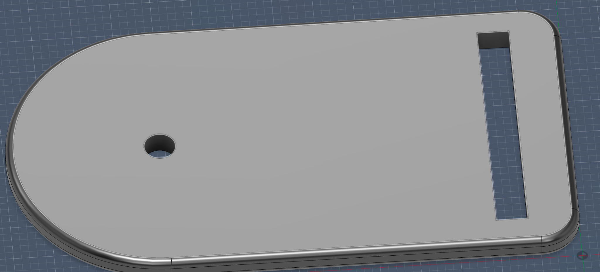
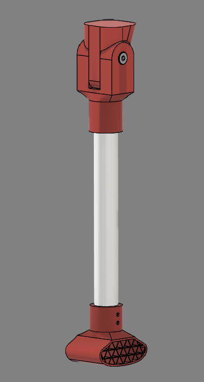
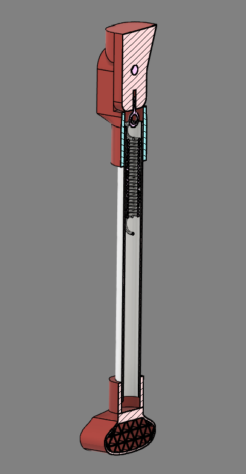

Max Case Study¶
- Age: 2.5
- Weight: 64 lbs
- Prosthetic: Full limb, front right
- Amputation: Full; born without the limb, with only a small bump remaining
- Reason: Congenital limb difference; also has ectrodactyly, a split "lobster claw", on the front left leg
- Goals: Greater endurance and physical activity
Max was adopted from the Front Street Animal Shelter in Sacramento when he was three months old. He loves going for walks in the local park but gets tired fairly quickly. Born without his right front leg, and with ectrodactyly, a split "lobster claw", on his left front leg, walking for longer stretches is difficult for him, so his family brings a cart along on walks so he can take breaks as needed.
Brief Summary of Animal Goals¶
The design goals for Max's prosthetic are:
- Load support — The prosthetic must support approximately 30% of Max's body weight during walking (85 N), with a factor of safety of about 3 (255 N).
- Water resistance — Materials that don't rust or deteriorate from water, since Max enjoys outdoor walks and swimming.
- Comfort and stability — The device must be comfortable and securely attached to the torso.
- Mobility improvement — The prosthetic should help distribute weight and improve walking endurance.
Materials¶
- TPU for harness and foot — Flexible, absorbs impact and shock, resistant to scratching and wear.
- Air-mesh for harness — Comfort, chafing prevention, breathability, and water resistance.
- Straps for harness — Secure the harness.
- Slots for harness — Externally attached to connect harness and straps.
- Contact cement — Adhesive for the air mesh and harness.
- 6061 Aluminum tube (0.05" thick) for the leg — Sturdy and lightweight.
- ABS for the leg joint — Good strength-to-weight ratio, durable, with better UV protection.
- Extension spring for the prosthetic joint — Spring suspension system for the limb.
- Shoulder bolt for the prosthetic joint — Stainless steel, durable and water resistant.
- Heat-set insert for the joint fixture — Stainless steel, durable and water resistant.
- Bearing bushing for the prosthetic joint — MDS-Nylon, low-friction and water resistant.
- Rubber padding for the bottom of the foot — Absorbs impact forces, reduces stress, and improves traction on different surfaces.
3D-Print Files¶
All print files are available in the shared Google Drive folder.




Iteration in Design Process and Challenges Faced¶
Iterations
- Limb shape — When incorporating the spring design, we initially went for a more ergonomic, curve-shaped leg. This caused issues with simulating predictable loads and behavior, and was very dependent on the functionality of the spring. It was revised to a straight tube, making loads more predictable and allowing us to use two regular bolts rather than the shoulder bolt — so the prosthetic stays usable even if the spring design fails.
- Strap adapter — Originally designed as two separate pieces that would be printed and friction-fitted together, which raised concerns about failure along the layer lines. Revised to a single straight flat piece fastened with a bolt to the harness.
Challenges Faced
- Limb shape — A full amputation with a minor "bump" remaining; the bump is a focal point for pressure concentration if improperly loaded. Asymmetry between left and right because of ectrodactyly means weight distribution, balance, and gait must be accounted for, as loading may shift toward one side. Proper harness fixation is important for secure suspension and comfort.
- Joint motion — Cannot be too rigid, as that would increase impact force. Needs some shock absorption and slight flexibility on contact to distribute force across the limb; a spring suspension system was proposed to address this.
- Weight distribution — The prosthetic must support 30% of the dog's weight for structural safety and functional symmetry, with no single area bearing significant stress. A factor of safety of 3 accounts for dynamic impact forces and uneven terrain.
Assembly of Full Design¶

